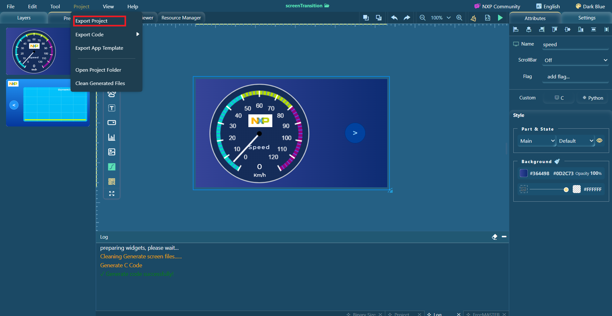
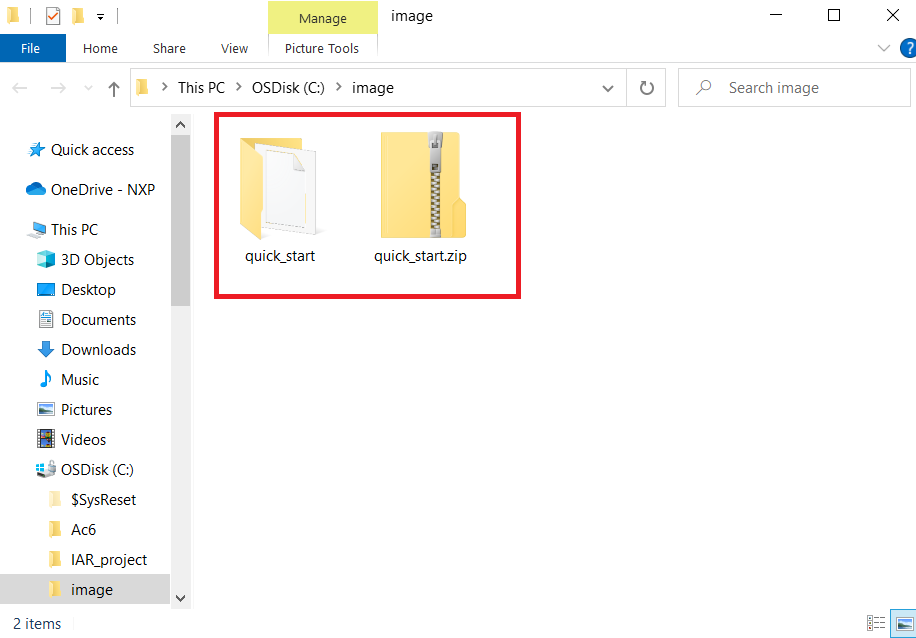

To share the GUI Guider project more conveniently, we have added the export project function. The IDE remembers the export path which is a common path in the export code function.
To export the project, click Project > Export project.
